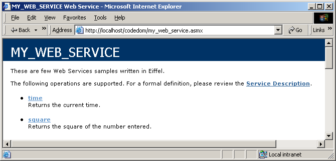

This example shows you how to use and how to configure an Eiffel Web Service. There are two Web Services square and time. The first one (square), returns the square of the number entered. The time Web Service returns the current time and uses the context inherited from class WEB_WEB_SERVICE. We also use an indexing clause to describe our Web Services in the html page and to add a namespace. Finally we use an indexing clause in each Web Service to describe it in the html page.
<%@ WebService class="MY_WEB_SERVICE" Language="Eiffel" %> indexing description: "[ Web service containing two services, square and time. ]" attribute: create {WEB_WEB_SERVICE_ATTRIBUTE}.make [["description", ("These are few Web Services samples.").to_cil], ["namespace", ("Eiffel.Samples").to_cil]] end class MY_WEB_SERVICE inherit WEB_WEB_SERVICE undefine finalize, get_hash_code, equals, to_string end ANY feature -- Basic Operations square (value: INTEGER): INTEGER is -- Mathematical operation square. indexing attribute: create {WEB_WEB_METHOD_ATTRIBUTE}.make [["description", ("Returns the square of the number entered.").to_cil]] end do Result := value * value end time: SYSTEM_STRING is -- Return current time. indexing attribute: create {WEB_WEB_METHOD_ATTRIBUTE}.make [["description", ("Returns the current time.").to_cil]] end do Result := context.timestamp.time_of_day.to_string end end -- class MY_WEB_SERVICE
Here is the output:
